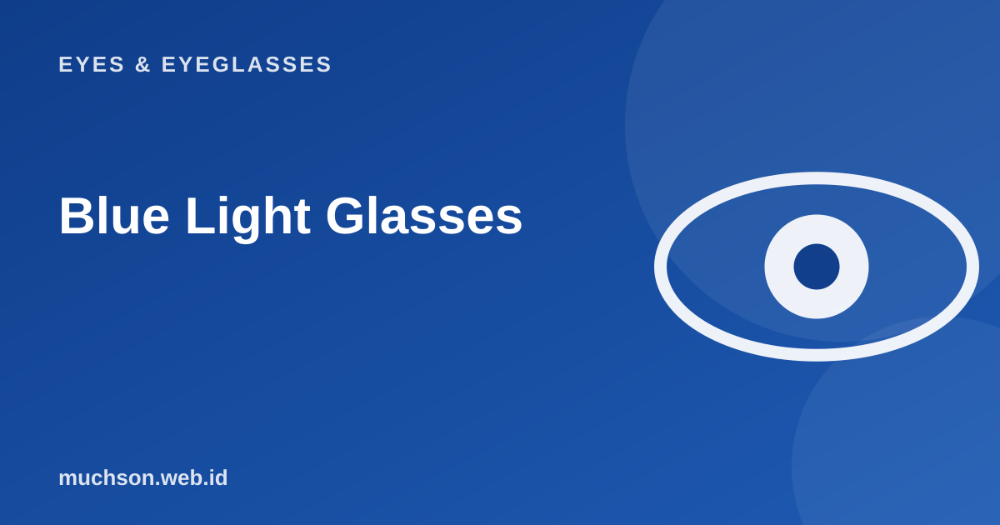

Home › Articles › Eyes & Eyeglasses
Eyes & EyeglassesBlue Light Glasses: Effective or Myth? What the Evidence Says
Ads for anti blue light glasses promise eyes that do not tire after a day at a screen. Is it true? The honest answer: the scientific evidence is much weaker than the advertising, but there are simple habits that are proven to help more. This article covers both, including when blue light lenses still make sense to choose.

What is blue light?
Blue light is high-energy blue light at wavelengths of around 400 to 500 nanometres. Its biggest source is in fact the sun. Phone and laptop screens emit it too, but in much smaller amounts than sunlight outdoors. Blue light also helps regulate the body's biological clock, which is why it is often linked to sleep quality.
What does the scientific evidence say?
A 2023 Cochrane systematic review (a summary of many studies) concluded that blue-light-filtering lenses may not reduce screen eye strain in the short term compared with ordinary lenses. On sleep, the results are not convincing: some studies report a benefit, others do not. That means the claim that blue light glasses "prevent eye damage" is not supported by strong evidence.
The main source of eye fatigue at a screen is reduced blinking (the eyes dry out) and focusing up close for too long, not the blue light itself. That is why habits matter more than lenses.
What is proven to help: the 20-20-20 rule
The American Academy of Ophthalmology recommends: every 20 minutes, look at something about 6 metres (20 feet) away for at least 20 seconds. The aim is to relax the focusing muscle and give the eyes a chance to blink normally. Try the timer below while you work.
A list of sensible habits
So who might still choose blue light lenses?
- People who already wear glasses. Adding a blue light coating to prescription lenses usually costs little extra, and some people feel more comfortable with screen glare.
- People who often work at night and want to reduce blue light. The effect on sleep is not certain, so treat it as an extra, not the main solution.
- People who do not want to buy twice. If your prescription needs updating anyway, choosing lenses with this coating is a practical consideration, not a medical need.
Do not buy blue light glasses out of fear of going blind or damaging your eyes. That reason is not supported by evidence. Buy them for comfort, and still keep up the habits above.
Signs your eyes need checking, not just resting
- Tired eyes and headaches that do not get better with rest.
- Persistent or changing blurred vision.
- Red, painful or constantly watering eyes.
- Flashes of light or a dark shadow appearing suddenly (get checked straight away).
FAQ
Are blue light glasses safe for children?
Can blue light glasses help you sleep better?
What is the difference between blue light lenses and ordinary lenses?
Do I need glasses if I only have tired eyes and no minus?
References
- Cochrane: blue-light filtering spectacle lenses for visual performance, sleep, and macular health (2023) (opens in a new tab)
- American Academy of Ophthalmology: digital eye strain and the 20-20-20 rule (opens in a new tab)